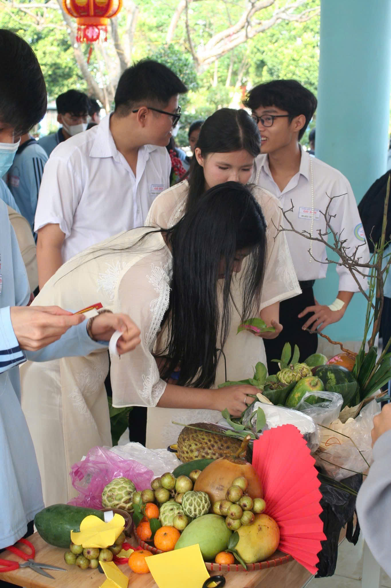
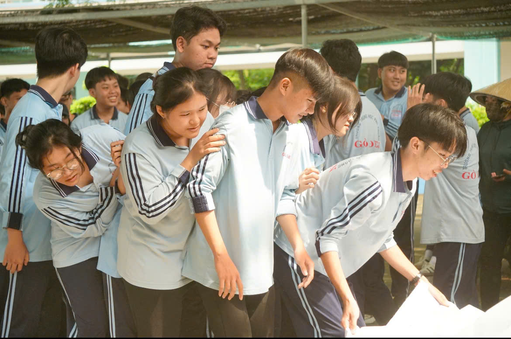

Cháy hết mình
Hết mình theo đuổi
Khẳng định bản thân
 |
 |
|
Vui chơiVui chơi có vai trò rất quan trọng trong quá trình học tập của học sinh. Sau những giờ học căng thẳng, các hoạt động vui chơi giúp học sinh thư giãn, giảm áp lực và lấy lại tinh thần để tiếp tục học tập hiệu quả hơn.Trong 3 năm qua lớp đã tham gia tất cả các hoạt động của trường.Thắng có thua có nhưng nhìn chung thì hiệu quả vẫn là niềm vui và sự giải trí.Việc tham gia tất cả các hoạt động là minh chứng cho sự năng động và sôi nổi của tập thể lớp A11.Trong tương lai lớp vẫn sẽ cống hiến cho trường tham gia tất cả và để lại màu sắc riêng của một tập thể A11 từ trước đến nay. |
||